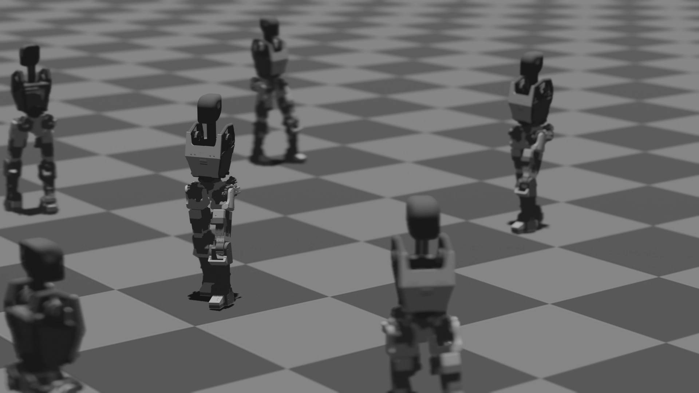

The Next Evolution of Labor
Vanar Generation 1
Vanar Generation 1 is our first general-purpose humanoid system built to work inside real human environments.
It is designed around the spaces, tools, and workflows that already exist, so it can operate where people work without requiring those environments to be rebuilt around machines.
The goal is simple: a physical system that can move, adapt, and perform useful tasks in everyday industrial settings.
At Vanar Robots, we follow a deployment-first approach. Every actuator, structural element, manipulator, control system, and software is built with
reliability, simplicity, and cost in mind. The focus is not on demonstration robots, but on machines that can be manufactured, deployed, and used for real work.
Our systems are intended for tasks that are repetitive, physically demanding, or require long hours of consistent effort.
By handling this kind of work, the robot becomes a practical tool that supports human teams, increases output, and keeps operations running smoothly.
Generation 1 is the foundation of that direction: a humanoid platform built to be useful, understandable, and ready to work alongside people in real environments.
Phase One: Structured Industrial Tasks

Specifications
| Height | 5’9” |
| Weight | ~60 kg |
| Payload Capacity | 20 kg |
| Expected Runtime | 5+ hours |
| Degrees of Freedom | 38 |
Target specifications for the current generation. These numbers improve with every prototype cycle as strength, efficiency, and control systems evolve.
Built In-house
Every major part of Vanar Generation 1 is designed and built by us: actuators, manipulators, structure, and the core software stack. This keeps the system tightly integrated and lets us iterate quickly as we learn from each prototype. Instead of assembling off-the-shelf parts, we engineer components specifically for our humanoid platform, so performance, reliability, and cost improve with every generation. It also means collaborators and engineers work directly with the real system, not a collection of black-box modules.
Actuators
We design and build our actuators from scratch, tuned for the specific demands of Vanar's movement, from high-speed joints to high-strength load-bearing ones. This gives us direct control over torque, response, efficiency, and cost, instead of adapting our designs around off-the-shelf motors. Every actuator is built to match the dynamics of the joint it drives, allowing tighter integration with our control systems and faster iteration across generations.
To validate real-world strength, we tested one of our actuators by attempting to pull an SUV. The actuator held and pulled, but the wall attachment failed before the actuator did, demonstrating the level of force these systems are designed to handle. https://x.com/ironwagh/status/1916622689537867814?s=20
Manipulators
We continuously design, test, and refine our manipulators to balance strength, adaptability, and simplicity. Each finger is built with a tendon-based mechanism capable of handling roughly 2–6 kg of load, allowing the hand to naturally conform to objects of different shapes while maintaining a secure grip. When combined across four fingers, this results in a manipulator capable of handling significant weight.
The current version features true thumb opposition, the thumb can touch the tip of each finger. This capability is fundamental to dexterous manipulation. It enables precision grips (like holding a screw or tool), stable pinch grasps, and more human-like interaction with small or irregular objects. Without opposition, a hand can grasp; with opposition, it can manipulate.
These designs are still evolving, and every iteration improves strength, control, and reliability. What exists today is only the starting point for much more capable hands in the coming generations.
Structure
We constantly experiment with different materials, geometries, and structural combinations to shape a body that is both strong and flexible. Every part of the frame is designed with real-world deployment in mind, not just lab demonstrations. That means focusing on durability, serviceability, and forms that can withstand continuous use.
Our structural designs evolve with each prototype, as we test new configurations and manufacturing approaches. The goal is to develop a physique that is lightweight, resilient, and practical to build at scale while maintaining the strength required for real tasks.
Software & Control
We develop and train our own control models in-house, with the goal of making our robots move and react as naturally as possible. Instead of depending on a large number of external sensors or complex vision peripherals, we focus on combining intelligent software with well-designed mechanics, closer to how humans rely on their own body and perception.
Our approach is to let the software learn how to control the hardware efficiently, reducing system complexity while improving adaptability. As the mechanical design evolves, the control models evolve with it, forming a tightly integrated system that becomes more capable and human-like with every training cycle.
Build Log
Our progress is documented, step by step. The build log is a live record of our milestones, experiments, successes, and failures as we develop each generation of Vanar.
Oct 2024
Foundation
Laid the foundation of Vanar Robots. Initial designs and core concepts were finalized to set the stage for development. https://x.com/ironwagh/status/1845364485587898708?s=20
Apr 2025
Hardware Tests & Improvements
Conducted extensive hardware tests and implemented key improvements, enhancing hardware performance and overall stability. https://x.com/vanar_robots/status/1921681487469981780?s=20
Sep 2025
Initial Locomotion
Achieved initial locomotion, successfully testing basic walking capabilities on Vanar Generation 1 Prototype. https://x.com/ironwagh/status/1971205893908988319?s=20
Feb 2026
Manipulators & Training
Developing and refining manipulators for enhanced dexterity while training models to interact with, map, and understand the environment for complex task execution.
Collaborate with us
We are building humanoid robots from the ground up and are always looking to work with engineers, researchers, manufacturers, and partners who want to push the boundaries of robotics. If you are interested in contributing, experimenting, or building something together, we would love to connect. Write to us >
Beta Program
For industries, factories, and organizations seeking early access to our Vanar Generation 1. Deploy in real environments, evaluate performance in your workflows, and work directly with our team as we refine the system. Expected late 2026–early 2027, starting at ₹20,000+ per month per unit. Join the Beta Program >